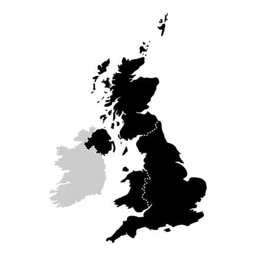

Hello everyone! This is a presentation based on the Higher Education: The New Global Economic War documentary, which allows us as students and future teachers to take a look at the educational context in regions such as England, Scandinavian countries, China, the USA, and Latin America. First, let’s focus on the high costs of higher education in England and what they imply. England is home to some of the most prestigious universities in the world, such as the University of Cambridge. However, this prestige comes with high costs. Local students pay around £9,790 per year, while international students can pay up to £70,000. In contrast, at more affordable universities like the University of Sunderland, international students pay around £16,500 per year, while local students still pay about £9,790. In addition, in cities like Oxford or London, students may spend between £12, and £18,000 per year on accommodation, food, and transportation. In this case, £1 is about 5,000 Colombian pesos. So, at Cambridge, international students can pay up to 350 million pesos per year, while in Sunderland, they pay around 80 million pesos. Access to higher education in England is therefore strongly influenced by economic factors. Although many students rely on government loans, this means that studying often involves long-term debt. As a result, not all students have the same opportunities, especially those from lower-income backgrounds. To conclude, I leave you with a question: Should higher education be a personal investment or a public right accessible to everyone?